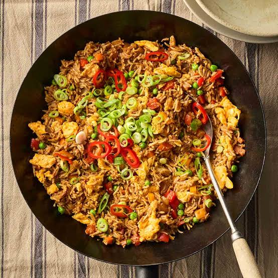

Fried Rice

What is Fried Rice?
Fried rice is a traditional Chinese preparation of cooked rice.
An ideal use for leftovers, fried rice is quick, customizable, and incredibly simple to put
together with whatever is in your fridge.
Ingredients
- 2/3 cup chopped baby carrots
- 1/2 cup frozen green peas
- 2 tablespoons vegetable oil
- 1 clove garlic, minced, or to taste
- 2 large eggs
- 3 cups leftover cooked and chilled white rice
- tablespoon soy sauce
- 2 teaspoons sesame oil
Steps to cook:
- Place carrots in a small saucepan and cover with water. Bring to a low boil and cook for 3 to 5 minutes. Stir in peas, then immediately drain in a colander.
- Heat a wok over high heat. Pour in vegetable oil, then stir in carrots, peas, and garlic; cook for about 30 seconds. Add eggs; stir quickly to scramble eggs with vegetables.
- Ready to serve!
Home